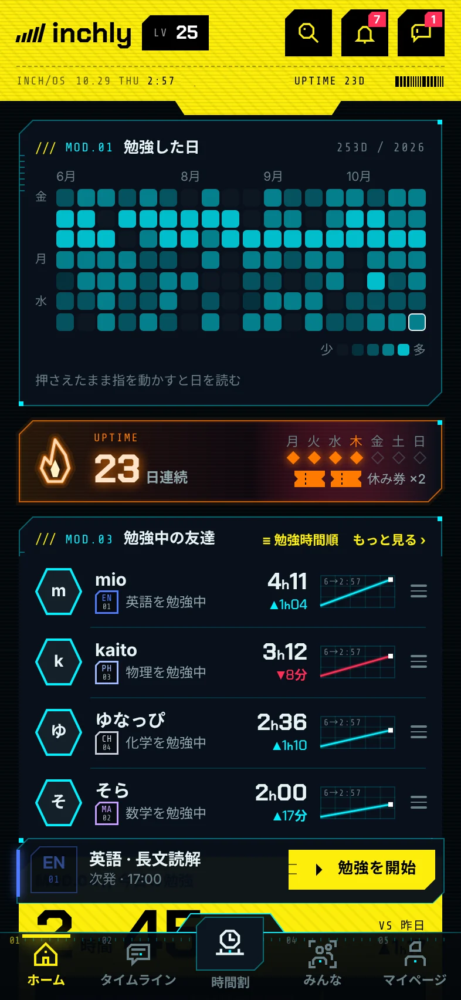

1できること
はかった時間が、
形になって残る。
時間割に予定を入れて、タイマーではかる。やった分は記録になり、日数やバッジになって見える。
-
17:00つぎは 英語
時間割
1日の予定を、1本の線にならべる。次の予定は画面の下のバーにいつも出て、時間が来るとお知らせが届く。
-
39:59国語 古文単語を勉強中
タイマー
予定の時間をすぎても、止めるまで数え続ける。0時をまたいだら、日ごとに分けて記録する。
-
253日今年、勉強した日
勉強した日
勉強した日は、マスが緑になる。たくさんやった日ほど、色が濃い。
-
23日連続休み券 2枚
連続記録
続けた日数を、炎といっしょに数える。7日続けると休み券が1枚。休んだ日に自動で使われて、連続が切れない。
-
7/11もらったバッジ
バッジ
100時間、7日連続。目標に届くと、バッジがもらえる。勉強するほど、レベルも上がる。
-
4人いま勉強中の友だち
友だち
いま勉強中の友だちが、科目と時間といっしょに並ぶ。友だちが始めたら、「一緒に始める」をひと押し。
数字と名前は、アプリの画面と同じ見本。
2アプリの画面
目盛りは、
アプリの中にもある。
ホームの「今日の勉強」には、目標までの目盛りがついている。どれも開発中の画面で、名前と数字は見本。



3使い方
入れるのは予定だけ。
あとは押すだけ。
時間割に入れる。
日にちと時間と科目を入れておく。次の予定は、画面の下のバーにいつも出る。
「勉強を開始」を押す。
押したら、もう始まっている。止めるまで、ちゃんとはかる。
✓ で記録する。
どこまでやったかを一言。書かなくても、時間はそのまま今日の記録になる。
2と3は、ページの上の見本で押せる。
4おうちの方へ
見せる相手は、
自分で決める。
はじめは、勉強中の表示（ニックネーム・科目・時間）は全員に、メッセージはグループのメンバーまでです。どちらも設定で、いつでも変えられます。
- 勉強中を見せる相手
- はじめ全員
- フォロワーだけ
- 見せない
- 順位を見せる
- はじめランキングに出す
- 出さない
出さなくても、自分の順位は見られます。
- メッセージを受け取る相手
- フォロー中の人
- はじめグループのメンバーまで
- 全員
- ブロック・通報
- 名前を押すと、どこからでもできます。ブロックした人は出てきません。
13歳未満の人へ
はじめに、保護者の同意を得ているかをたずねます。「保護者の同意を得ています」にチェックしないと、先へ進めません。
記録のゆくえ
記録は、この iPhone の中に保存されます。圏外でも記録できます。勉強中の表示（ニックネーム・科目・時間）と順位は、設定で決めた範囲の人に見えます。設定から、書き出しや、アカウントとデータの削除ができます。